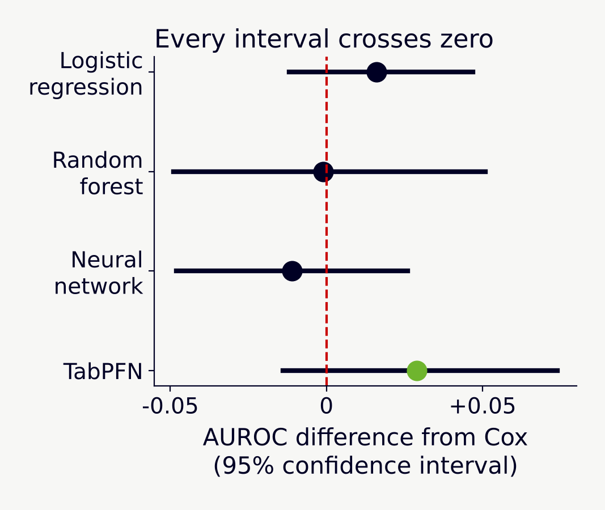
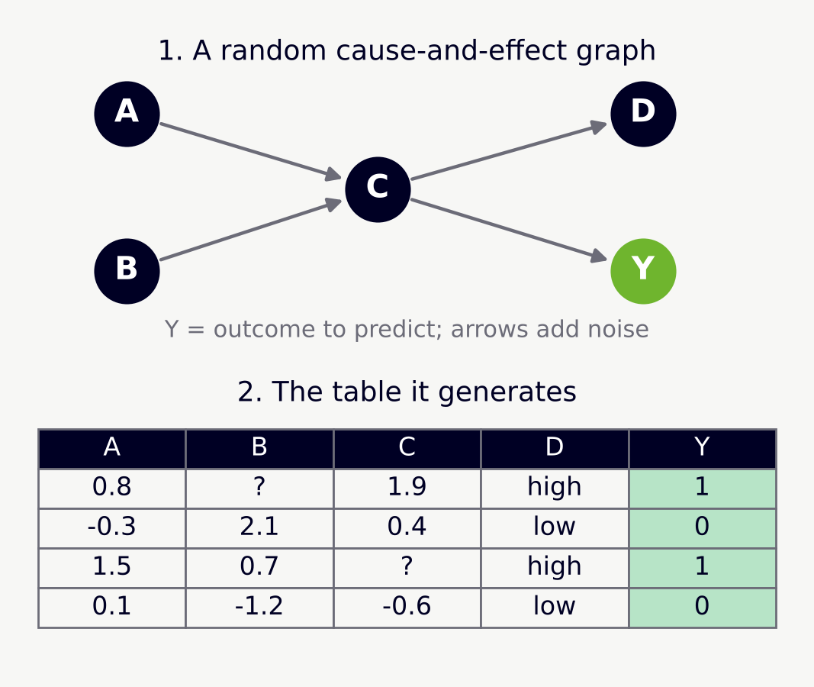

Convolutional
Slides a magnifying-glass filter across pixels to map edges, curves and colours

See what changes for patients when a readable model becomes a neural network

Weighted sum and sigmoid, the same 117 numbers as logistic regression
Each draws a line; together they bend the risk boundary
4,289 numbers, meaning spread across every neuron
Each step is simple; the stack is what no one can follow

Exact: weight times value, summed
117 for 116 inputs
0.864
One solution for these settings
Is each weight plausible?
Approximate only: occlusion parts do not add up
4,289, about 37 times more
0.842
Seed changes who is flagged
Is the gain worth the opacity?
Sources: notebook 01, sections 3 to 6; AUROC, area under the receiver operating characteristic curve
Full access to every weight is not the same as understanding one prediction
Compare four models on the same patients and decide if complexity pays off
| Model | AUROC | Gap vs Cox (95% CI) | Deaths in top 79 |
|---|---|---|---|
| Cox, competing risks | 0.864 | Reference | 18 of 42 |
| Logistic regression | 0.880 | +0.016 (-0.012 to +0.047) | 21 of 42 |
| Random forest | 0.863 | -0.001 (-0.049 to +0.051) | 23 of 42 |
| Neural network, 5 seeds | 0.852 | -0.011 (-0.048 to +0.026) | 17 of 42 |
| TabPFN-2, pretrained | 0.892 | +0.029 (-0.014 to +0.074) | 24 of 42 |
TabPFN ranks best, yet no interval excludes zero
Sources: notebook 02, sections 3, 5 and 6; AUROC, area under the receiver operating characteristic curve; CI, confidence interval

Knows nothing
Adjusts its weights to fit them
Minutes to hours of training and tuning
Fill gaps, scale, encode
A student revising for one exam
Has practised on about 130 million synthetic tables
Reads them as worked examples, weights stay fixed
One pass: seconds on a graphics card
Handles gaps and scales itself
An experienced locum reading the ward's notes
Sources: Hollmann et al. (2025), Nature, TabPFN; notebook 02, section 6
About 130 million synthetic tables teach it how to learn from a table, not facts about patients

Inputs and outcomes, gaps left in
Inputs only, outcome unknown
Each value checked against its row and its column
No training loop, no tuning
Weights unchanged; new context, new predictions
It recognises which kinds of synthetic worlds could have produced our table, then predicts as they would
Sources: Hollmann et al. (2025), Nature; Prior Labs documentation
Fill gaps, scale, encode categories
Pick a model, search settings with cross-validation
Learns weights from our patients: the heavy step
Fast: applies the learned weights
Retrain the model, then re-validate
Raw table in: gaps and categories handled
No tuning: default settings
Stores our patients as context: almost instant
The heavy step: reads context and new patients together
Add them to the context, then re-validate
Sources: notebook 02, sections 2 and 6; Prior Labs documentation

Spots that lowest GCS tracks death and a record number does not, from the numbers alone
Can find risk rising sharply past a cut-off, not only in straight lines
Keeps predicting when a blood test is missing
Reads the outcome rate from the context patients
Works best on tables like its practice: one row per patient, up to 10,000 rows
That GCS measures how awake a patient is, or why that matters
Whether the input causes death or only marks sicker patients
That a test may be missing because a doctor saw no need for it
Whether its risks match our hospital: calibration must be checked
Data from many hospitals, changing practice, or hour-by-hour readings
Sources: Hollmann et al. (2025), Nature; notebook 01, section 2 (GCS); notebook 02, section 6
| Fit | Good uses | Why |
|---|---|---|
| Strong | Small clinical datasets: single-hospital cohorts, registries, trials | Built for up to 10,000 rows; often wins where data are scarce |
| Strong | Fast, honest baseline before building anything bespoke | One line of code, no tuning, raises the bar for every other model |
| Careful | Decision support in care | Needs local validation, licence check and monitoring like any device |
| Careful | Data from several hospitals or over time | Assumes one stable table; drift is not part of its practice |
| Poor | Images, free text, signals, very large datasets | Wrong data type or beyond its size limits |
A strong first model for small tables, not a shortcut past validation
Sources: Hollmann et al. (2025), Nature; Ye et al. (2025), A closer look at TabPFN v2; Liu et al. (2026), JAMIA Open
Responsible AI checks before any clinical use
Opaque practice: nobody can inspect the synthetic worlds behind its habits
Model is weights plus context: version both, or predictions cannot be reproduced
Size limits: TabPFN-2 tested up to 10,000 rows and 500 columns
Speed: seconds on a graphics card, much slower on a laptop processor
Licences: TabPFN-2 open with attribution; newer versions non-commercial
Data protection: the hosted service sends rows to the maker's servers
Apache 2.0 plus attribution
No account needed
Allowed, with attribution
1,000 rows by default; lifted for our 2,364
Lower
Non-commercial only
Account and accepted terms
Needs an enterprise licence
5,000 rows
Higher, as reported by its makers
Sources: TabPFN README and Prior Labs documentation; Hollmann et al. (2025), Nature; notebook 02, section 6
Evidence from notebook 02 on 7-day in-hospital death
Ranking: no model separated from Cox
Calibration: forest and network closer for the sickest group
Equal capacity: forest finds 23 deaths, network 17
Weighted loss: 97 alerts per 100 patients at 10% risk
TabPFN: best AUROC, 0.892, but its interval includes zero
Interpretability: Cox and logistic regression stay readable
When a readable model performs as well, the black box carries the burden of proof
See where deep learning wins, and check that the test is honest
Filters are learned, not designed, which is where the black box starts
A convolutional neural network (CNN) works like an assembly line of specialists turning pixels into a decision
Slides a magnifying-glass filter across pixels to map edges, curves and colours
Keeps strong signals and drops weak ones so noise does not clutter later steps
Reports the strongest signal per patch to shrink data and handle position shifts
Combines all summarised features to score every possible class
Each layer has one job: scan, filter, summarise and then decide
Sources: Google Cloud, What is a convolutional neural network? Notes: 1ReLU, rectified linear unit
Follow one 3x3 vertical-edge filter sliding across a tiny 6x6 pixel patch
The same 9 filter weights scan all 16 positions instead of learning separate weights per pixel
Max pooling keeps the strongest signal even if the lesion shifts slightly inside the frame
Sharing filters cuts weights, and pooling helps spot shifted patterns
Sources: worked example adapted from Google Cloud, What is a convolutional neural network?
Inspired by human vision, CNNs excel on images and any data arranged in a spatial or 1D grid
Assigns one label to a whole image, from everyday objects to dermatoscope skin lesions
Identifies objects and pinpoints their exact location inside a frame or clinical scan
Detects tumours, fractures and organ borders in X-rays, MRIs1 and CT2 scans
Screens drug structures and scans 1D grids such as audio spectrograms, text and time series
Whenever nearby values form a meaningful pattern, a CNN can learn it
Sources: Google Cloud, What is a convolutional neural network? Notes: 1MRI, magnetic resonance imaging; 2CT, computed tomography
Tabular rows or flattened vectors
Treats each pixel alone; loses neighbours
Every connection needs its own weight
Huge parameter count; prone to overfitting
Sensitive when a feature moves in the frame
Grid data: images, scans, audio and 1D series
Preserves pixel adjacency and local shapes
Reuses each filter across the whole image
Fewer weights via shared filters and pooling
Recognises features almost anywhere in frame
Sources: Google Cloud, What is a convolutional neural network?
693 of 2,005, or 35%
None measurable in two runs at 28 pixels
31% possibly cancerous, 88% biopsied
19.6%
Not independent: same lesion on both sides
None
Reference
Kept together on one side
12.1%, mostly common moles
Clinics with a similar case mix
Sources: notebook 03, section 4; Abhishek et al. (2025), Scientific Data; Tschandl et al. (2018), Scientific Data
A test score belongs to a model and its test set: change the patients and the number moves
Test whether heatmaps describe the model, and catch a planted shortcut
| Method | What it measures | Agrees with occlusion | Deletion score |
|---|---|---|---|
| Saliency | Sensitivity of the output to each pixel | -0.19 | 0.641 |
| Grad-CAM | Last-layer regions that raise the score | 0.19 | 0.414 |
| Occlusion | Score drop when a patch is covered | 1.00 | 0.396 |
| Random pixels | Baseline for the deletion test | - | 0.648 |
Saliency passed the sanity check yet failed the deletion test
Sources: notebook 04, sections 2 to 4; deletion score: mean model score while covering pixels, lower is more faithful

Reveal a planted ink mark
Rank pixels the model needs
Compare methods side by side
Prompt a clinician's questions
Point to image regions
Find clues nobody thought to test
Show the model's reasoning
Pick the true method by eye
Prove a prediction is right
Explain the disease
Sources: notebook 04; Adebayo et al. (2018), Sanity checks for saliency maps
How it beganGoogle Creative Lab launched a 2017 browser demo to demystify neural networks, then version 2.0 in 2019
PurposeNo-code transfer learning in the browser via TensorFlow.js, keeping samples local and exporting models
In classClick the laptop screen to build a model fast, then audit the same shortcuts
Sources: Google Creative Lab, Teachable Machine (2017; v2.0, 2019); screenshot captured 2026-11-23
Three browser models for clinical prototyping, before clinical validation
Wound photos, skin lesions or pill checks
Rulers, ink marks or lighting
Cough screening, wheeze cues or voice alerts
Ward noise or microphone type
Physiotherapy form, joint range or fall risk
Camera angle or mobility aids
Fast browser models test clinical workflows, never replace external validation
Sources: Google Creative Lab, Teachable Machine (MobileNet, Speech Commands, PoseNet); TensorFlow.js
Use explanation maps to audit a model, never to prove it is right
Turn a model score into a safe, accountable clinical decision
Platt scaling on 63 positive images moved the error
90% on validation became 81% on test
Handing over 20% cut misses from 28 to 8 or 12
Mild blur dropped sensitivity to 7%
4 to 96 positive lesions per group; no skin tone
Each step answers a question a regulator will ask
Sources: notebook 05; Regulation (EU) 2024/1689; Regulation (EU) 2017/745

Groups of four: one role each, one decision together
Dermatologist: missed positive lesions and unnecessary referrals
Patient representative: fairness and the right to challenge
Health service manager: workload, cost and waiting lists
Regulator: evidence, documentation and monitoring
Decide: deploy, restrict, study or stop
Name two numbers and one missing piece of evidence
Decide who acts on the output and who answers for it before the model meets patients